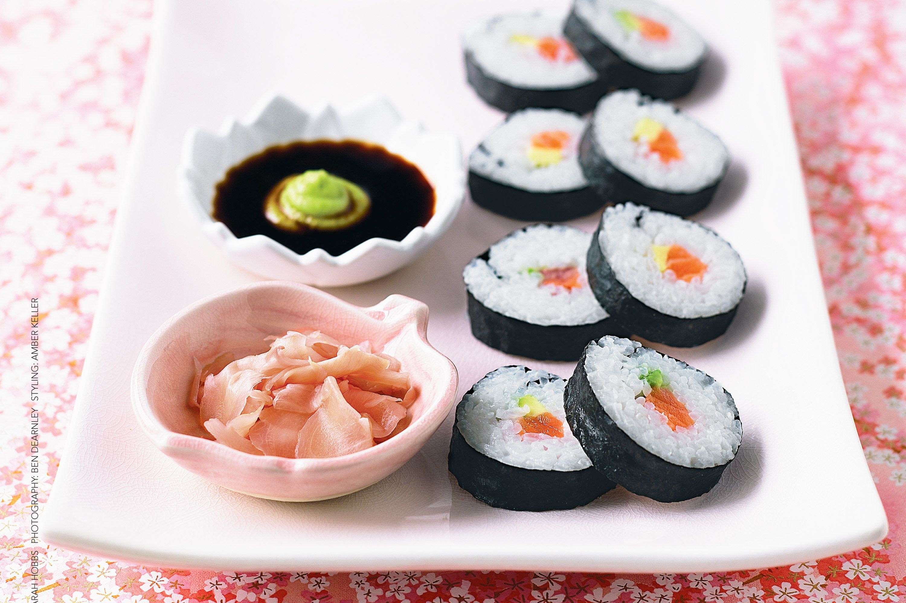

Sushi

sushi on a plate
sushi is the best food on the planet. It is a japanese cuisine that involves raw fish wrapped in rice and seaweed wrappers with other ingredients. The possibilities are endless
popular types of fish used in sushi include tuna, eel, shrimp, and salmon. For this recipe we will be using tuna
Tuna & Avocado Sushi Roll Recipe
You will need:
- Tuna
- 185g can tuna in olive oil, drained well, finely flaked
- 2 tbsp Japanese-style mayonnaise
- 3 nori sheets
- 2 cups SunRice Koshihikari sushi rice
- 1/2 small ripe avocado, thinly sliced lengthways
- Soy sauce, to serve
- Pickled ginger, to serve
How to make Tuna & Avocado rolls
- Make sushi rice: Place rice in a fine sieve. Rinse under cold water, stirring with your hand, until the water runs clear. Drain well. Combine rice and 3 cups cold water in a large saucepan. Cover. Bring to the boil over high heat. Reduce heat to medium-low. Gently simmer for 12 to 15 minutes or until all water is absorbed and rice is tender.
- Remove from heat. Stand, covered, for 10 minutes. Transfer to a large ceramic or plastic shallow dish.
- Using a spatula, stir rice to break up any lumps. Sprinkle rice with sugar and salt. Gradually add sushi seasoning, lifting and turning rice, until seasoning is well combined and the liquid is absorbed. Cool to room temperature.
- Place tuna and mayonnaise in a bowl. Mix until well combined.
- Place a sushi mat (see note) on a flat surface with slats running horizontally. Place 1 nori sheet, shiny-side down, on mat. Leaving a 2cm strip at edge furthest away from you, firmly press 1/3 of sushi rice evenly over nori using damp hands (see notes). Place strips of avocado along edge closest to you. Top with 1/3 of the tuna.
- Lightly brush nori strip with cold water. Using sushi mat, roll up firmly to form a tight roll. Gently press to seal. Transfer to a chopping board. Using a very sharp knife and wiping knife after each cut, trim ends. Cut into 6 slices. Repeat with remaining ingredients to make 18 pieces. Serve with soy sauce and pickled ginger.
Recipe note
Find sushi mats in the Asian section of supermarket. When working with cooked sushi rice, you need to work with wet hands - dip into a bowl of water with a teaspoon sushi seasoning or rice vinegar added.